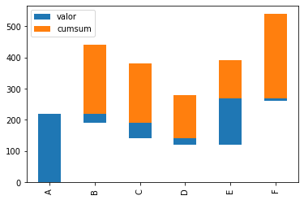
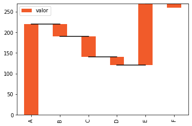
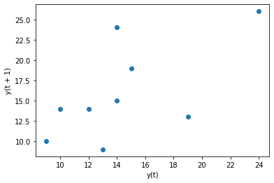
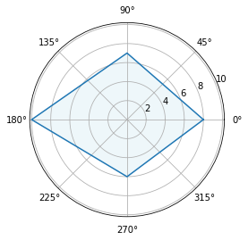
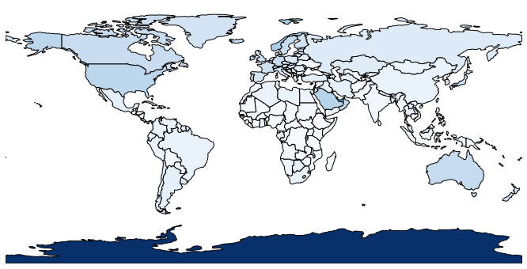

Análisis 1D — Graficas de Comparación¶
60:00 min | Última modificación: Abril 5, 2021 | `YouTube <>`__
[1]:
import numpy as np
import pandas as pd
import matplotlib.pyplot as plt
import seaborn as sns
[2]:
tips = sns.load_dataset('tips')
[3]:
tips.head()
[3]:
| total_bill | tip | sex | smoker | day | time | size | |
|---|---|---|---|---|---|---|---|
| 0 | 16.99 | 1.01 | Female | No | Sun | Dinner | 2 |
| 1 | 10.34 | 1.66 | Male | No | Sun | Dinner | 3 |
| 2 | 21.01 | 3.50 | Male | No | Sun | Dinner | 3 |
| 3 | 23.68 | 3.31 | Male | No | Sun | Dinner | 2 |
| 4 | 24.59 | 3.61 | Female | No | Sun | Dinner | 4 |
sns.countplot()¶
pywaffle¶
[5]:
!pip3 install --quiet pywaffle
WARNING: Running pip as the 'root' user can result in broken permissions and conflicting behaviour with the system package manager. It is recommended to use a virtual environment instead: https://pip.pypa.io/warnings/venv
[7]:
from pywaffle import Waffle
data = {'A': 17, 'B': 16, 'C': 6, 'D': 7, 'E': 5}
fig = plt.figure(
FigureClass=Waffle,
rows=6,
values=data,
colors=('blue', 'red', 'green', 'gray', 'yellow'),
title=dict(label='Titulo', loc='left'),
labels=["{} ({})".format(k, v) for k, v in data.items()],
legend=dict(loc='lower left', bbox_to_anchor=(0, -0.4), ncol=len(data), framealpha=0)
)

Squarify¶
[8]:
!pip3 install --quiet squarify
WARNING: Running pip as the 'root' user can result in broken permissions and conflicting behaviour with the system package manager. It is recommended to use a virtual environment instead: https://pip.pypa.io/warnings/venv
[11]:
import squarify
data = [10, 12, 23, 54, 36]
labels = list("ABCDE")
squarify.plot(
sizes=data,
label=labels,
color='green,grey,blue,red,purple'.split(','),
alpha=0.5,
)
plt.axis("off")
[11]:
(0.0, 100.0, 0.0, 100.0)

pandas.dataframe.bar()¶
[60]:
df = pd.DataFrame(
data={"valor": [220, -30, -50, -20, 150, -10]},
index=list("ABCDEF"),
)
df.head()
[60]:
| valor | |
|---|---|
| A | 220 |
| B | -30 |
| C | -50 |
| D | -20 |
| E | 150 |
[61]:
df['cumsum'] = df.valor.cumsum().shift(1).fillna(0)
df.head()
[61]:
| valor | cumsum | |
|---|---|---|
| A | 220 | 0.0 |
| B | -30 | 220.0 |
| C | -50 | 190.0 |
| D | -20 | 140.0 |
| E | 150 | 120.0 |
[62]:
df.plot.bar(
stacked=True,
bottom=df['cumsum'],
)
[62]:
<matplotlib.axes._subplots.AxesSubplot at 0x7f785d8ad780>

[63]:
cumsum = df.valor.cumsum().shift(1).fillna(0)
h_lines = cumsum.reset_index(drop=True).repeat(3).shift(-1)
h_lines[1::3] = np.nan
h_lines
[63]:
0 0.0
0 NaN
0 220.0
1 220.0
1 NaN
1 190.0
2 190.0
2 NaN
2 140.0
3 140.0
3 NaN
3 120.0
4 120.0
4 NaN
4 270.0
5 270.0
5 NaN
5 NaN
Name: valor, dtype: float64
[72]:
df['total'] = df.sum().valor
cumsum.loc['total'] = 0
fig = df[['valor']].plot.bar(
stacked=True,
bottom=df['cumsum'],
color="#F15B2A",
)
cumsum['total'] = df[:-1].sum().valor
h_lines = cumsum.reset_index(drop=True).repeat(3).shift(-1)
h_lines[1::3]=np.nan
fig.plot(h_lines.index, h_lines.values, 'black',)
[72]:
[<matplotlib.lines.Line2D at 0x7f785d635358>]

pandas.lag_plot()¶
[12]:
ts_data = pd.DataFrame(
data={
'yt': [12, 14, 15, 19, 13, 9, 10, 14, 24, 26]
}
)
pd.plotting.lag_plot(ts_data, lag=1)
[12]:
<matplotlib.axes._subplots.AxesSubplot at 0x7ff617116d68>

subplot¶
[13]:
data_dir = {
'A': [8],
'B': [7],
'C': [10],
'D': [6],
}
data_df = pd.DataFrame(data_dir)
values = data_df.iloc[0].tolist()
values.append(values[0])
angles = [a/4 * 2 * np.pi for a in range(4)]
angles.append(angles[0])
plt.subplot(111, polar=True)
plt.plot(angles, values)
plt.fill(angles, values, "lightblue", alpha=0.2)
[13]:
[<matplotlib.patches.Polygon at 0x7ff617033898>]

Geopandas¶
[14]:
!pip3 install --quiet geopandas
WARNING: Running pip as the 'root' user can result in broken permissions and conflicting behaviour with the system package manager. It is recommended to use a virtual environment instead: https://pip.pypa.io/warnings/venv
[15]:
!apt-get update
!apt-get install -yq --no-install-recommends libproj-dev proj-data proj-bin
Hit:1 http://archive.ubuntu.com/ubuntu bionic InRelease
Get:2 http://security.ubuntu.com/ubuntu bionic-security InRelease [88.7 kB]
Get:3 http://archive.ubuntu.com/ubuntu bionic-updates InRelease [88.7 kB]
Get:4 http://security.ubuntu.com/ubuntu bionic-security/main amd64 Packages [2295 kB]
Get:5 http://archive.ubuntu.com/ubuntu bionic-backports InRelease [74.6 kB]
Get:6 http://archive.ubuntu.com/ubuntu bionic-updates/main amd64 Packages [2731 kB]
Get:7 http://archive.ubuntu.com/ubuntu bionic-updates/universe amd64 Packages [2200 kB]
Fetched 7478 kB in 2s (3058 kB/s)
Reading package lists... Done
Reading package lists...
Building dependency tree...
Reading state information...
libproj-dev is already the newest version (4.9.3-2).
proj-bin is already the newest version (4.9.3-2).
proj-data is already the newest version (4.9.3-2).
0 upgraded, 0 newly installed, 0 to remove and 6 not upgraded.
[16]:
!apt-get install -yq libgeos-dev
Reading package lists...
Building dependency tree...
Reading state information...
libgeos-dev is already the newest version (3.6.2-1build2).
0 upgraded, 0 newly installed, 0 to remove and 6 not upgraded.
[17]:
!pip3 install --quiet cython
WARNING: Running pip as the 'root' user can result in broken permissions and conflicting behaviour with the system package manager. It is recommended to use a virtual environment instead: https://pip.pypa.io/warnings/venv
[18]:
!pip3 install --quiet cartopy
WARNING: Running pip as the 'root' user can result in broken permissions and conflicting behaviour with the system package manager. It is recommended to use a virtual environment instead: https://pip.pypa.io/warnings/venv
[19]:
!pip3 install --quiet mapclassify
WARNING: Running pip as the 'root' user can result in broken permissions and conflicting behaviour with the system package manager. It is recommended to use a virtual environment instead: https://pip.pypa.io/warnings/venv
[20]:
!pip3 install --quiet geoplot
WARNING: Running pip as the 'root' user can result in broken permissions and conflicting behaviour with the system package manager. It is recommended to use a virtual environment instead: https://pip.pypa.io/warnings/venv
[21]:
import geopandas
import geoplot
path = geopandas.datasets.get_path('naturalearth_lowres')
df = geopandas.read_file(path)
df['gdp_pp'] = df.gdp_md_est / df.pop_est
df.head()
[21]:
| pop_est | continent | name | iso_a3 | gdp_md_est | geometry | gdp_pp | |
|---|---|---|---|---|---|---|---|
| 0 | 920938 | Oceania | Fiji | FJI | 8374.0 | MULTIPOLYGON (((180.00000 -16.06713, 180.00000... | 0.009093 |
| 1 | 53950935 | Africa | Tanzania | TZA | 150600.0 | POLYGON ((33.90371 -0.95000, 34.07262 -1.05982... | 0.002791 |
| 2 | 603253 | Africa | W. Sahara | ESH | 906.5 | POLYGON ((-8.66559 27.65643, -8.66512 27.58948... | 0.001503 |
| 3 | 35623680 | North America | Canada | CAN | 1674000.0 | MULTIPOLYGON (((-122.84000 49.00000, -122.9742... | 0.046991 |
| 4 | 326625791 | North America | United States of America | USA | 18560000.0 | MULTIPOLYGON (((-122.84000 49.00000, -120.0000... | 0.056823 |
[22]:
geoplot.choropleth(df, hue='gdp_pp', cmap='Blues', figsize=(12, 6))
[22]:
<matplotlib.axes._subplots.AxesSubplot at 0x7ff6376c9668>
